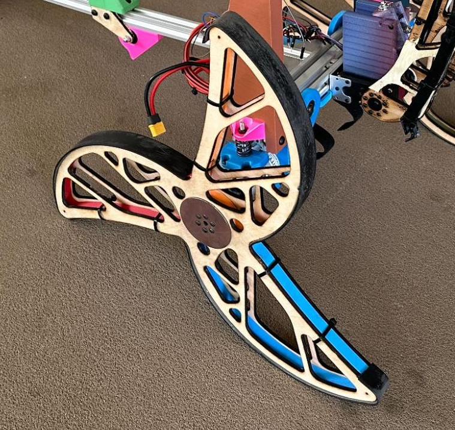

Stair Climbing Robot
Intro

For my sophomore design class, I worked with a small team to compete in a class-wide competition. Our goal was to design and build a robot capable of climbing a set of stairs, retrieving an egg, and returning it safely to the start. As the lead for the robot's mechanical design, I managed the CAD, manufactured prototypes, and integrated the components.
Wheels
Our tri-spoke wheel design proved exceptionally effective at climbing the stairs. However, the long spokes were susceptible to bending loads if the robot tipped over. To ensure robustness, I designed the wheels as a sandwich composite with birch plywood skins and a PETG core. We tested the bending strength of several core infill densities and adhesives, finding that a 15% infill core bonded with cyanoacrylate created the strongest construction. I also used topology optimization in Fusion 360 to reduce unnecessary mass from the plywood skins.
Suspension
To complement the robust wheels, I implemented a suspension system to absorb major impacts. I sourced the springs from old motorcycle clutch springs from my Kawasaki Z125, calculating that two per side provided the optimal spring rate. For simplicity, I used a swing-axle design with 608 bearings as pivots, and I integrated the motor housing as a structural component.
Egg Basket
While our wheels excelled at climbing stairs, they offered poor maneuverability on flat ground. Consequently, a primary requirement for the egg retrieval device was that it shall not require precision positioning of the robot to pick up the egg. The concept I chose was inspired by a big-box store ball pit, using an array of elastic bands stretched over the opening of a large basket. The final design could reliably pick up an egg over an area of 225x150 mm and retain it as the robot went down the stairs.